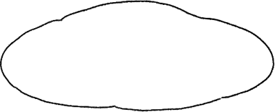
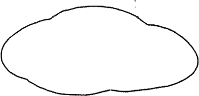
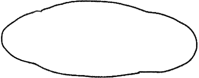
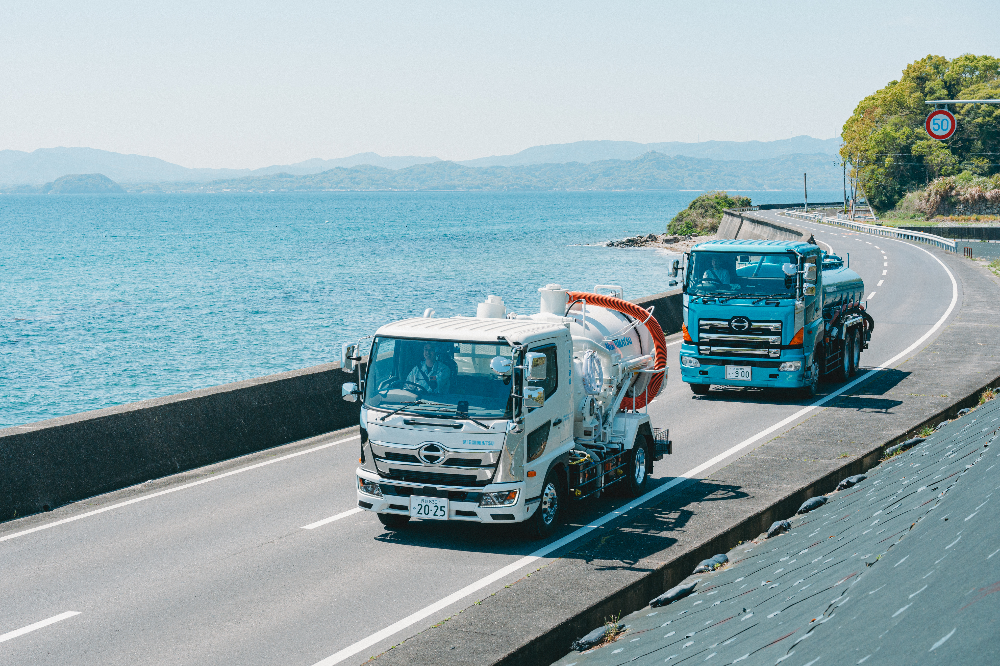
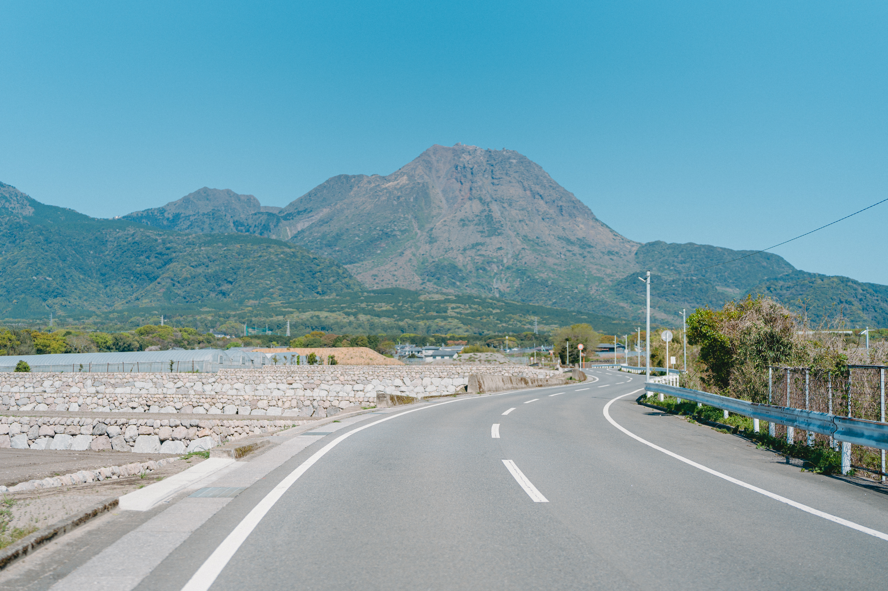

身近なことだからこそ知っておきたい！
 ごみと資源
ごみと資源ずかん見る »



地域とつながる、おしごとのかたち
身近なことだからこそ知っておきたい！
ごみと資源わたしたちのこと、もっと知ってほしい！
 西松の
西松の ►動画
►動画
地域から出たごみや廃棄物は、すてることで終わりではなく、そこから先があります。正しく処理されてはじめて、地域の環境と衛生的でゆたかなくらしが守られるのです。
わたしたち西松の仕事は、ごみや廃棄物を回収して、運んで、適正に処理をすること。その積み重ねが、社会のサイクルを支え、地域の環境を守ることに、直接つながっています。
ずっと受け継いでいきたい、南島原の美しい自然も、ゆたかなくらしも、持続可能な未来も。ごみや廃棄物の適正な処理を通じて、めぐりめぐって、未来に希望をつないでいきます。



廃棄物のことで困ったら、まずはご相談ください！

西松の仕事は、南島原のくらしに密接に関わり、事業者を支え、地域にとって無くてはならないエッセンシャルワーカーです。先進の技術を駆使した取り組みにもちからを入れていますので、気になる方はまずはお問合せください。
採用情報をみる »西松の日々のこと、仕事のこと、
ごみの豆知識など、発信しています。